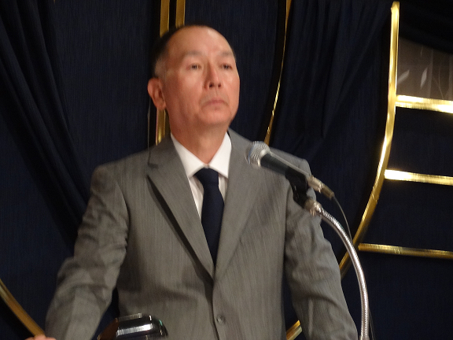

兵庫県機械技術研究会

谷口 義博 会長(株式会社 千代田精機代表取締役社長)
兵庫県機械技術研究会（以後、研究会という）は、機械加工技術を中心として金属、電気、電子技術を兵庫県立工業技術センターと一緒になって、生産現場のドロくさい技術から最先端技術までのモノづくり技術について研鑽しながら、会員相互の親睦を深めることを目的とした中小企業の技術の向上を図る会です。
昭和30年代初期の頃、新しい機械の購入が困難な中小企業では、精度の良い機械部品を加工するために工作機械を改良することが大きな課題でした。この課題を解決するための勉強会として、昭和30年10月に有志が集まって組合を設立したのが、研究会の前進にあたる兵庫県工作機械改良研究会です。昭和33年9月に兵庫県機械技術研究会に改称されました。その後、様々な業種の企業が参画し、現在では機械、金属、電気、電子工業などの企業が会員となり、技術講演会や工場見学会などの行事を通じて関連業界の発展に貢献して参りました。